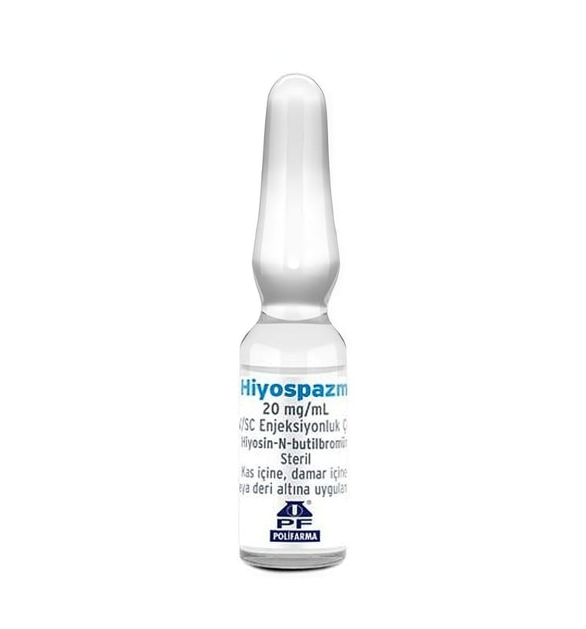

Hiyospazm 20 mg/ml İM/İV/SC Enjeksiyonluk Çözelti

Ne için kullanılır
KT · Bölüm 1HİYOSPAZM, spazm giderici ilaçlar grubuna dahildir. Her ampulün 1 mL’sinde etkin madde olarak 20 mg hiyosin-N-butilbromür bulunur. 6 adet ampul içeren kutularda kullanıma sunulmuştur.
HİYOSPAZM aşağıdaki organların kaslarında meydana gelen ani, şiddetli nöbetler şeklindeki ağrılı kasılmaların (spazm) geçirilmesi için kullanılır: - Mide - Bağırsaklar - İdrar kesesi ve idrar yolları - Safra kanalları - Üreme organları Bu ilacı kullanmaya başlamadan önce bu KULLANMA TALİMATINI dikkatlice okuyunuz, çünkü sizin için önemli bilgiler içermektedir. • Bu kullanma talimatını saklayınız. Daha sonra tekrar okumaya ihtiyaç duyabilirsiniz. • Eğer ilave sorularınız olursa, lütfen doktorunuza veya eczacınıza danışınız. • Bu ilaç kişisel olarak sizin için reçete edilmiştir, başkalarına vermeyiniz. • Bu ilacın kullanımı sırasında, doktora veya hastaneye gittiğinizde doktorunuza bu ilacı kullandığınızı söyleyiniz. • Bu talimatta yazılanlara aynen uyunuz. İlaç hakkında size önerilen dozun dışında yüksek veya düşük doz kullanmayınız.
HİYOSPAZM teşhis ve tedaviye yönelik radyolojik girişimler sırasında (örneğin midenin ve on iki parmak bağırsağının optik bir alet ile incelemesi (endoskopi) yapılırken) spazmların giderilmesi için kullanılır.